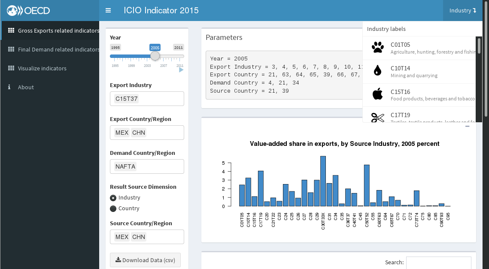
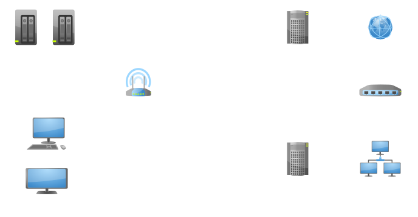
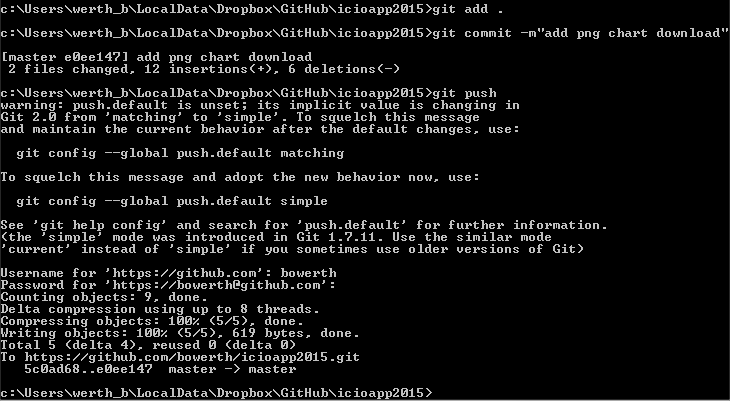
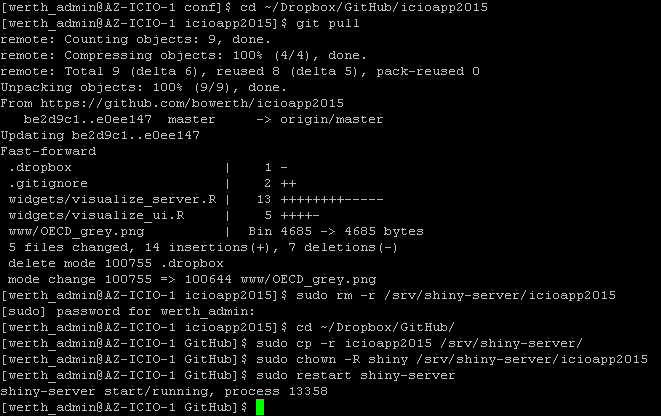

Version Control System requirements
Directorate for Science, Technology and Innovation
STI Developments
MultiProd: Micro drivers of aggregate productivity
IPP: The Innovation Policy Platform
TiVA: Trade in Value-added
MultiProd
Micro-drivers of aggregate productivity
STI/SPD
MultiProd
Context
Firm-level data is confidential:
- code developed at OECD by 2 collaborators
- Network of researchers/statisticians in OECD countries plus Brazil, Turkey...
- Results (or errors!) are sent back to us for analysis
MultiProd
Solution: simple Gitflow workflow

MultiProd
Git serves two purposes internally:
- Track changes, overall progress, and sometimes to track down regressions;
- Share the code over several platforms through a shared repository on Dropbox.
Maybe crowdsourcing one day? Dissemination, bug spotting, improvements, etc.
bare Repository
hold git repository on network share
- git remote add upstream https://github.com/SWS-Methodology/faoswsLoss.git
- git remote set-url origin file://t:/Team_working_folder/A/FBS-Modules/faoswsLoss/.git
IPP
The Innovation Policy Platform
STI/STP
IPP
Interactive workspaces (COP) use Drupal for content management
- user contributions under version control
- Drupal uses Git in the backend
ICIO-TIVA
Measuring Trade in Value Added
STI/EAS
Concept
Public Server
- Microsoft Azure
- Redhat Linux
- 2 vCPU
- 3.5GB RAM
- 100GB storage
- 200GB of US and EU network data transferred
- 200GB of international network data transferred
User Interface
Resource Management
Update Repository
git add .git commit -m'add png chart download'git push
Update Server from Repository
git pull
Needs
- non-public repositories
- external platform subscription (e.g. github, bitbucket)
- manage organisation account
- involve other directorates
- reduce duplication of efforts
- manage horizontal and external collaboration projects

thank you